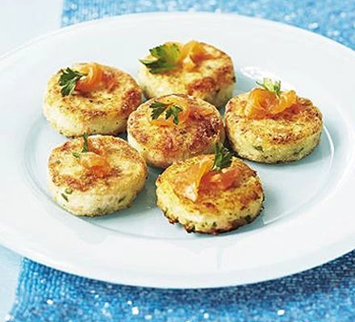

Salmon & Lemon mini fishcakes

These fish cakes provide a tasty gluten-free alternative to your festive spread.
To everyone’s amazement it's mash potato!
- Prep: 30 minutes
- Cook: 15 minutes
- Difficulty: Easy
- Makes: 20
- Freezable
- Gluten-free
- Dairy-free
Nutrition: per fishcake
- kcal 52
- fat 4g
- saturates 1g
- carbs 35g
- sugars 0g
- fibre 0g
- protein 2g
- salt 0.34g (low)
Ingredients
- 2 large baking potatoes
- 2 tbsp olive oil
- grated zest and juice 1/2 lemon
- 1 egg yoke
- 140g smoked salmon trimmings, plus extra to serve
- 1 tbsp chopped parsley, plus extra
- 2 tbsp gluten-free flour m ixed with 1 tsp coarsely ground pepper
- a littel oil, for frying
Method
- Microwave potatoes on high for 10 minutes until tender.
- Leave to cool for 5 mins.
- Scoop the flesh in a bowl.
- Season with olive oil, lemon zest and juice to taste.
- Mix in the egg, salmon and parsley.
- Shape into small rounds 3cm wide and 1cm deep.
- Chill for 15 minutes.
- Dust each cake with the peppered flour.
- Fry over a low heat in a little oil for 2-3 mins on each side.
- Drain on kitchen paper.
- Serve garnished with salmon and parsley.